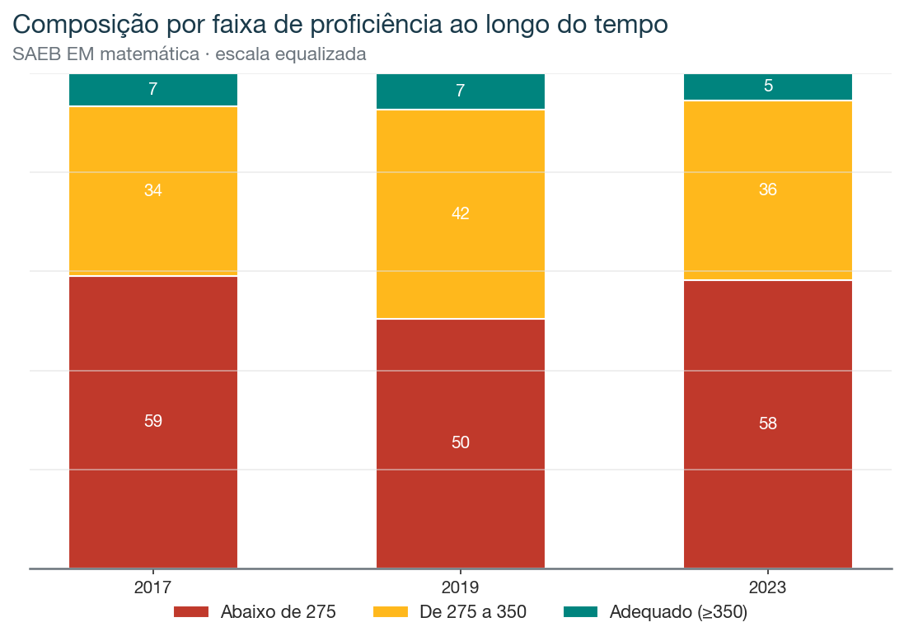
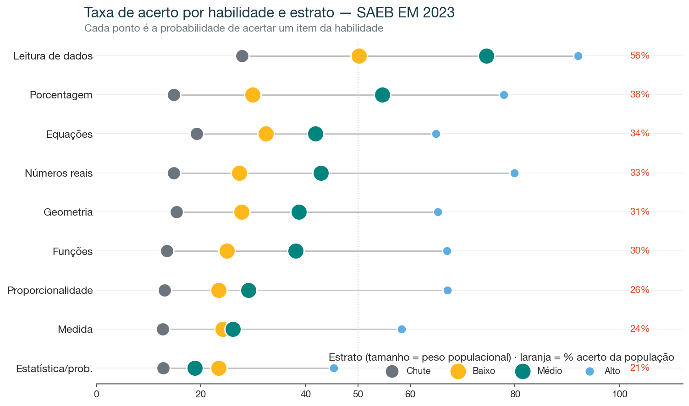
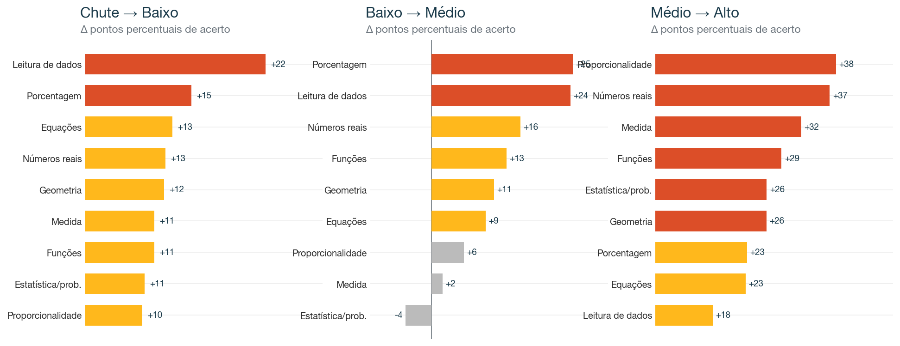
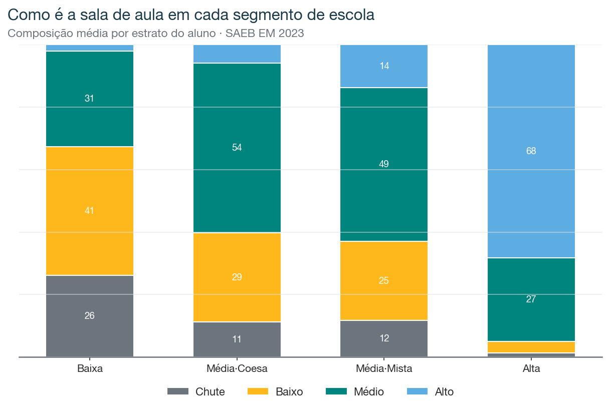

Três edições censitárias, mesma metodologia: 2017, 2019 e 2023, cerca de 1,5 milhão de concluintes do EM em cada uma, com prova de matemática válida. Para cada aluno, escoreamos as respostas item a item, ligamos cada item à habilidade que ele mede (o descritor da Matriz de Referência) e estratificamos pela proficiência. O método é o mesmo do artigo do ENEM. As decisões estão em DECISOES.md.
Capítulo 1
Uma década estagnada, com um mergulho na pandemia
No ENEM, a nota subiu 60 pontos em dez anos, sem que PISA ou SAEB confirmassem. Aqui medimos o SAEB direto, na escala equalizada que torna a comparação legítima.

A proficiência média foi 266 (2017) → 273 (2019) → 268 (2023). O aprendizado adequado (≥350) subiu de 6,6% para 7,4% até 2019 e caiu para 5,5% em 2023, abaixo de onde estava em 2017. Houve um ganho pequeno na segunda metade da década passada, e a pandemia o apagou.

Na régua que de fato equaliza, a década é de estagnação. O movimento que aparecia no ENEM não existe aqui.
Capítulo 2
O que cada grupo realmente sabe
A foto detalhada usa a edição mais recente e completa (2023). A nota separa os concluintes em quatro grupos: Chute (acerta no nível do acaso, taxa abaixo de 0,20), Baixo, Médio e Alto (≥350, aprendizado adequado).

Escoreando por habilidade, a leitura é dura e tem a mesma assinatura do ENEM:

- Leitura de Dados é a única habilidade com cobertura razoável (56% de acerto). Ler um gráfico ou uma tabela é o que mais gente consegue fazer.
- Todas as outras oito ficam abaixo de 40%: Porcentagem 38%, Equações 34%, Números reais 33%, Geometria 31%, Funções 30%, Proporcionalidade 26%, Medida 24%, Estatística/probabilidade 21%.
- Fora do estrato Alto, quase nada passa de 50%. No Médio, só Leitura de Dados (75%) e Porcentagem (55%) cruzam a metade.
- Mesmo o topo tem buracos: o Alto acerta Leitura de Dados em 92%, mas Estatística em 45% e Medida em 58%.
A forma desse perfil é estável nas três edições (Leitura de Dados sempre na frente, abstração sempre atrás). Os níveis absolutos por habilidade não são comparáveis entre anos, porque a composição de itens de cada prova muda; por isso o eixo temporal fica na proficiência equalizada, e o perfil de habilidade é lido dentro de cada ano.
Capítulo 3
O que diferencia um degrau do outro

- Chute → Baixo: o que mais avança é Leitura de Dados (+22 pp). Sair do acaso é antes de tudo conseguir ler informação.
- Baixo → Médio: o motor é Porcentagem (+25 pp).
- Médio → Alto: o salto é largo e geral (+28 pp em média). Chegar ao adequado depende de fluência em quase tudo ao mesmo tempo.

Capítulo 4
As escolas e a sala de aula
O SAEB é censitário e já vem com escola e turma identificadas, então o mapa de escolas é nativo.


Visto escola por escola, o sistema é majoritariamente de baixo desempenho.
Capítulo 5
O gradiente socioeconômico, e a síntese

O gradiente é claro (o aluno mais rico tem quase quatro vezes mais chance de atingir o adequado), e modesto em termos absolutos: mesmo no topo socioeconômico, 9 em cada 10 concluintes não atingem o aprendizado adequado em matemática. O déficit é geral, não um problema só dos mais pobres.
No censo, a hipótese que ficou aberta no ENEM se confirma: a maioria dos concluintes do Ensino Médio termina sem domínio sólido de matemática, um em cada cinco no nível do acaso, e só 5,5% no aprendizado adequado. A única habilidade com alguma cobertura é leitura de dados; a abstração fica para trás em toda a distribuição. E, na régua equalizada, a década é de estagnação, com a pandemia desfazendo o pouco que se ganhou.
DECISOES.md.